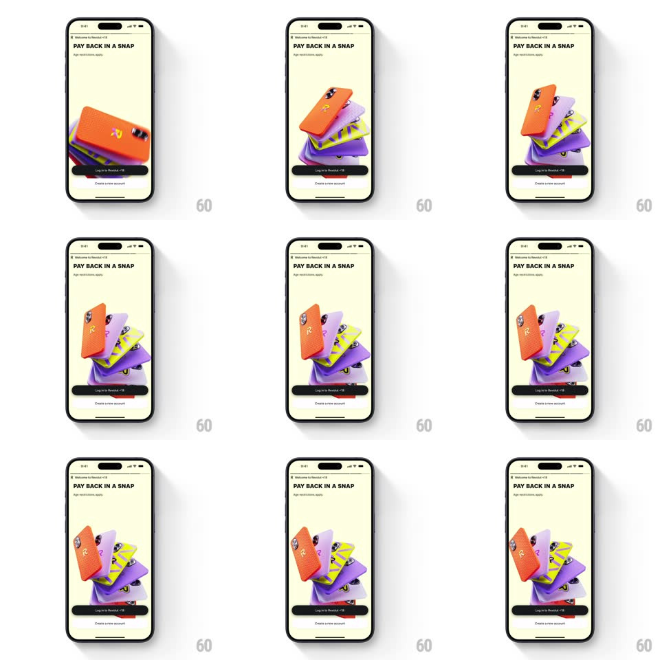

Media
Frame-by-frame

Rebuild this interaction 1:1: Revolut's 3D phone stack loop - on the pale "PAY BACK IN A SNAP" screen, a stack of chunky 3D phones (orange R, purple, zigzag) rotates while the top phone keeps sliding off the pile and re-stacking at the bottom.

Rebuild this interaction 1:1: Revolut's 3D phone stack loop - on the pale "PAY BACK IN A SNAP" screen, a stack of chunky 3D phones (orange R, purple, zigzag) rotates while the top phone keeps sliding off the pile and re-stacking at the bottom. ## Integration Integration: stack-agnostic spec - springs given as stiffness/damping, timed motions as duration + curve; map every value to your framework and animation library of choice. ## Scene A pale cream screen: "Welcome to Revolut <18" eyebrow, bold headline "PAY BACK IN A SNAP" with an "Age restrictions apply" caption, then the hero - a leaning tower of thick colorful 3D phone bodies (orange with the R logo, lilac, yellow with black zigzag, violet) - a black "Log in to Revolut <18" pill and "Create a new account" link below. ## Motion spec Pattern: rotating stack with cycling top phone. - The whole stack slowly rotates around its vertical axis (one turn ~8s, linear, gentle) so all phone colors cycle past the camera. - Every ~2.2s the top phone lifts and slides off sideways (translateX + rotateZ, 450ms, ease-out), arcs down behind the stack (500ms), and slots in at the bottom (300ms, ease-in) - the pile shuffles. - Each remaining phone in the stack settles upward one notch (spring ~300/20, 300ms). - Phones have real depth - camera bumps, side buttons, and soft shadows between layers. - The loop is continuous and ambient. ## Calibration - The stack leans slightly (about 8deg off vertical) - a playful pile, not a server rack. - One phone moves at a time; the shuffle rhythm is steady. ## Reduced motion Static stack with a slow rotate; no shuffling. ## Don't miss - The orange phone carries the R logo - it should be the most frequent top card. - Shadows between stacked phones shift as the pile rotates.